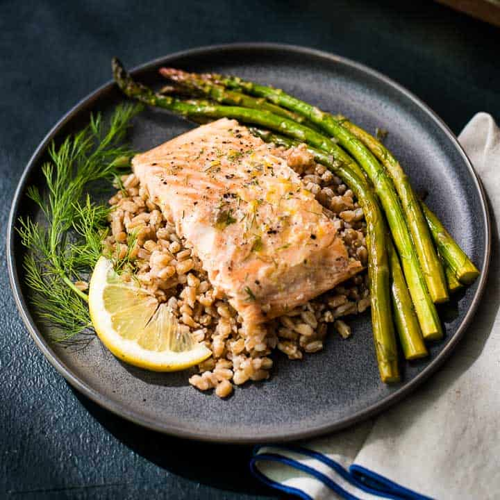
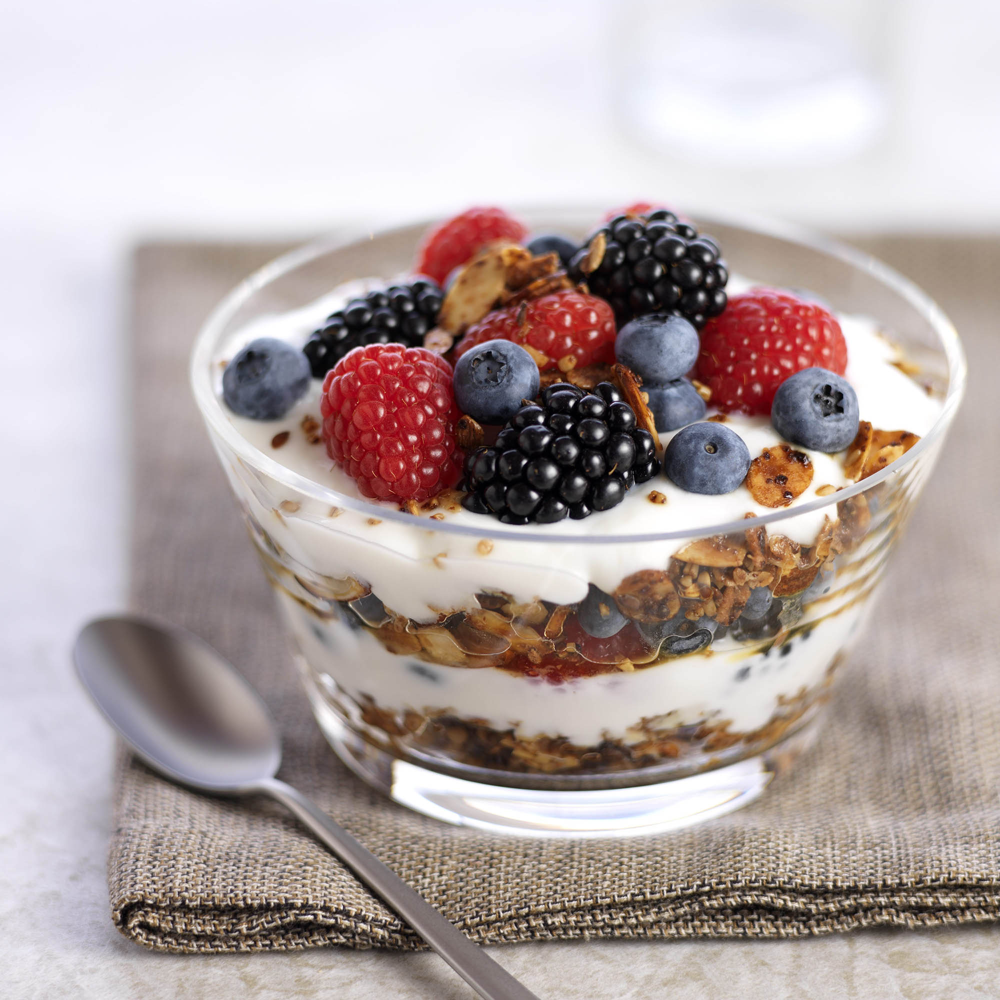

Amuse-Bouche
Watermelon & Feta Skewers with Mint
Recipe:
- Cut seedless watermelon and feta cheese into 1-inch cubes.
- Thread a watermelon cube, a feta cube, and a fresh mint leaf onto small skewers.
- Drizzle lightly with balsamic glaze (optional).
- Serve chilled.
Appetizer
Creamy Tomato Soup Shooters with Basil Oil
Recipe:
- Sauté diced onion and garlic in olive oil.
- Add crushed tomatoes, vegetable broth, and a pinch of sugar. Simmer until heated through.
- Blend the soup until smooth and creamy. Season with salt and pepper.
- For the basil oil, blend fresh basil leaves with olive oil until smooth. Strain if desired.
- Pour the warm soup into small glasses or shot glasses and drizzle with basil oil before serving.
Salad
Arugula Salad with Pear, Walnuts, and Goat Cheese Vinaigrette
Recipe:
- Wash and dry arugula. Slice a ripe pear. Toast walnut halves or pieces. Crumble goat cheese.
- For the vinaigrette, whisk together olive oil, red wine vinegar, Dijon mustard, honey (or maple syrup), salt, and pepper.
- In a bowl, gently toss the arugula with the pear slices, walnuts, and goat cheese.
- Drizzle the vinaigrette over the salad just before serving.
Main Course

Pan-Seared Salmon with Lemon-Dill Sauce and Roasted Asparagus
Recipe:
- Preheat oven to 400°F (200°C). Toss asparagus spears with olive oil, salt, and pepper. Roast for 10-15 minutes until tender-crisp.
- Season salmon fillets with salt and pepper. Heat olive oil in a skillet over medium-high heat.
- Sear the salmon skin-side down for 4-5 minutes until crispy. Flip and cook for another 3-4 minutes, or until cooked through.
- For the lemon-dill sauce, whisk together melted butter, lemon juice, fresh dill, and a pinch of salt.
- Serve the pan-seared salmon with the roasted asparagus and drizzle generously with the lemon-dill sauce.
Dessert

Berry Parfait with Yogurt and Granola
Recipe:
- Wash and prepare a mix of your favorite berries (strawberries sliced, blueberries and raspberries whole).
- Layer yogurt (Greek or regular), granola, and mixed berries in a glass or parfait dish.
- Repeat the layers.
- Garnish with a fresh mint leaf or a sprinkle of extra granola. Serve immediately or chill for later.